Your computer's assistant
Is my disk OK? It froze twice today.
It reads your system's own records and explains what's wrong and what to do first, in plain words, without the terminal.
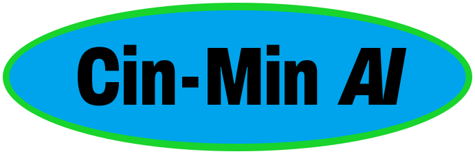
Ready · runs on this computer · what you type stays here
An assistant that helps you use your computer, build things, learn and write. It runs on your own graphics card, works without the internet, and asks before it changes anything.
Free. No ads, no telemetry, no account. Download it and use it wherever, however you need it.
First public alpha. Try it from a USB stick first: trying it changes nothing on your computer.
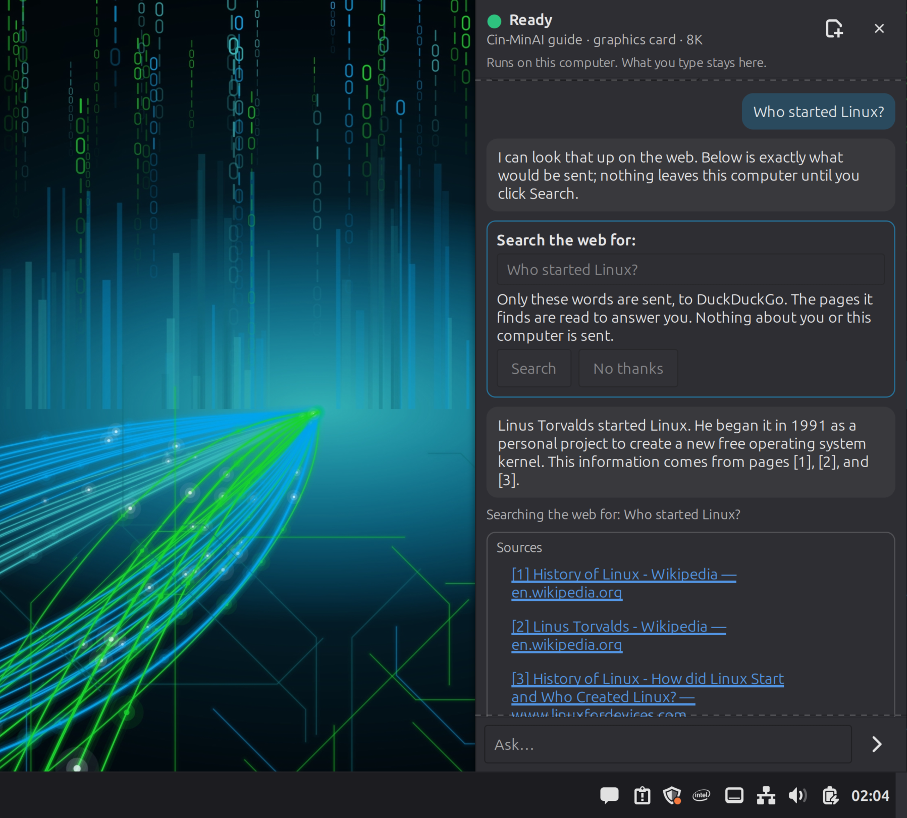
ONE ASSISTANT, MANY JOBS
One assistant lives in the sidebar (or press Super+A). A second workspace, AICUI, is for building and learning code. Both run locally, on the model that fits your computer.
Is my disk OK? It froze twice today.
It reads your system's own records and explains what's wrong and what to do first, in plain words, without the terminal.
Where's my C: drive? How do I do updates, like Windows Update?
It knows Mint's real menu names, gives numbered steps and opens the right settings for you. In English, Spanish, Portuguese, French, German and Japanese.
Make a wedding page with an RSVP form and a countdown.
AICUI writes the project, runs it, checks it and shows you every change before it makes it. On ten-year-old hardware it built a game and a wedding page.
Don't fix it yet. Tell me what I did wrong, then we can fix it.
It explains your mistake line by line, waits until you want the fix, then runs your code to prove it works.
I have an idea for a story but I'm stuck.
Throw ideas at the wall: it keeps them as notes (facts, characters, places, ideas) and asks you questions, step by step through the shape of a story, until it comes together. Plus a private journal that stays yours.
Page structure · styling · mobile menu · countdown · RSVP · final check
It breaks a project into goals and ticks each one only when the project's own checks pass. Not when it thinks it's done.
Summarize this video.
Watching a YouTube video in Firefox? Ask, and it reads the video's transcript and preview pictures and tells you what's in it, without the ad breaks and without playing it. Show it a photo, a screenshot of an error, a scanned letter or a video file, and it describes it, summarizes it or reads it out. All on this computer.
THE CODING ASSISTANT, ON A REAL PROJECT
A wedding page AICUI built earlier, and one small change. Recorded on a 2014 quad-core with a GTX 1080 Ti.
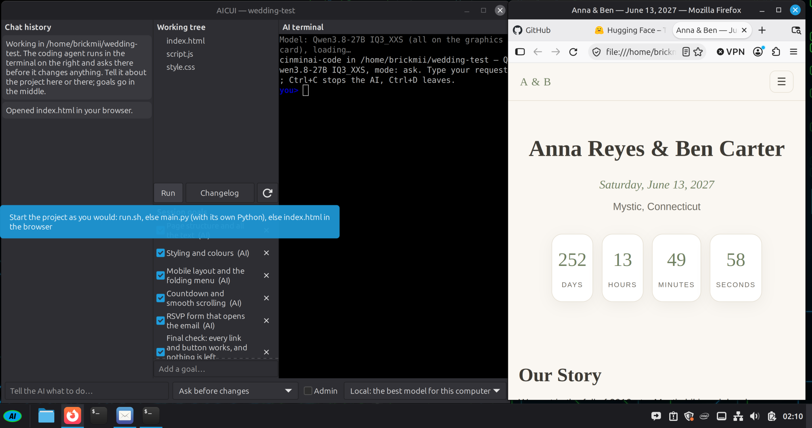
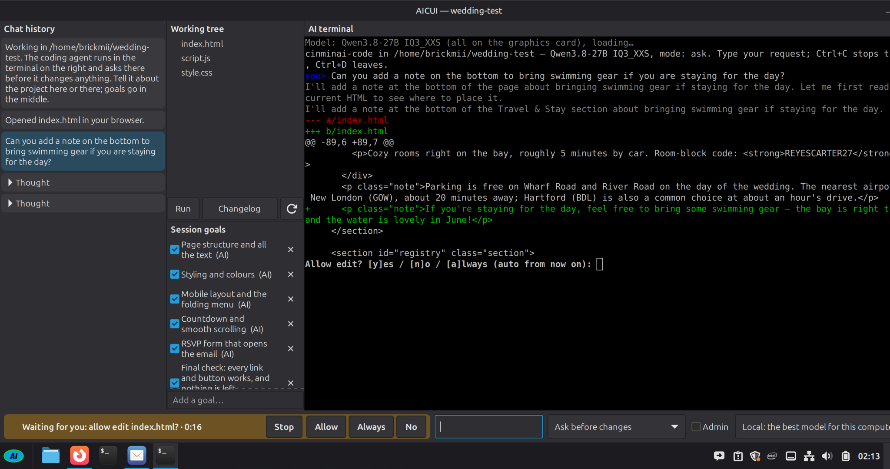
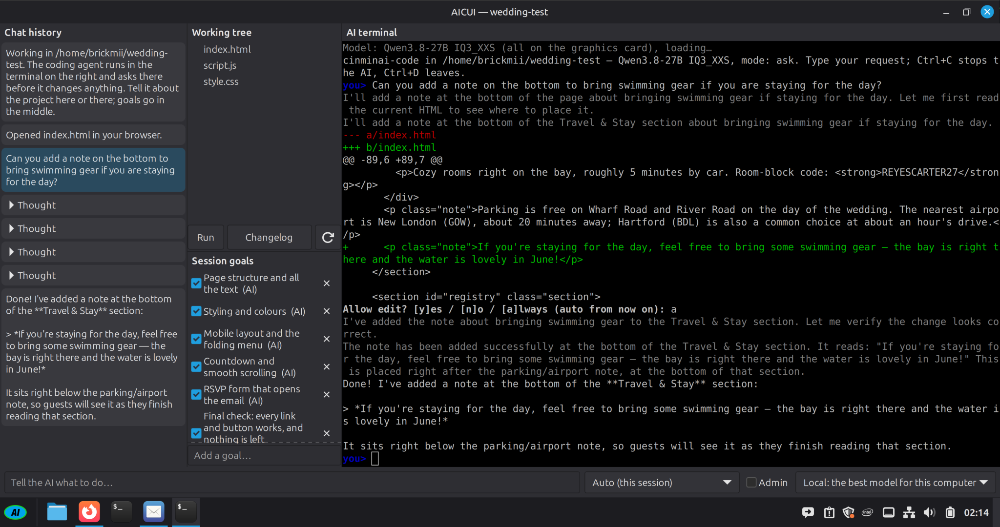
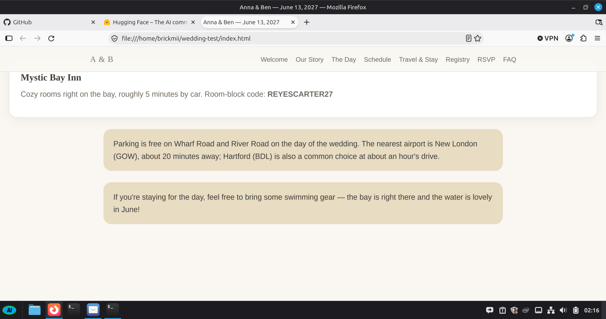
THE TEACHING ASSISTANT
A broken two-line Python script, and a request to explain before fixing.
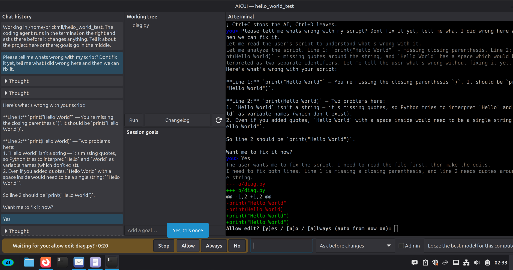
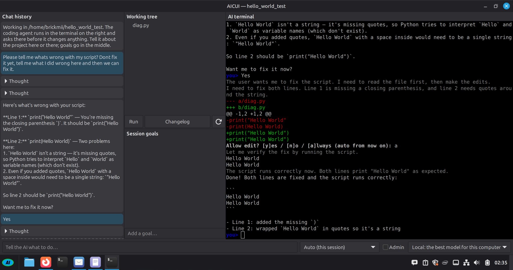
THE WRITING ASSISTANT, ON A REAL STORY
A painting company that paints with glitter, an office chicken, and a team missing someone. The ideas were thrown at the wall and kept as notes; the assistant asked questions until they took the shape of a story, then wrote a 5,000-word first draft with its writing model, on a GTX 1080 Ti. Not edited:
One day, when a client arrived to inspect their newly painted kitchen, Steven greeted them with a bow and a flourish, as if he were hosting a royal event. The client, a young man named Mark, looked at the walls—painted in deep blue with flecks of gold glitter and a mural of a sun rising over the Caribbean. He turned to Steven, who was now wearing a crown made of paintbrushes. “This is… something,” Mark said. Steven nodded solemnly. “We’re not just painting houses, Mark. We’re painting dreams.” Mark blinked. “I thought we were just painting a kitchen.” Steven grinned. “Well, you get both.”
YOU OWN THE COMPUTER, AND THE BUTTON
The model runs on your own graphics card with llama.cpp. Nothing you type leaves the machine unless you click Search, and then it shows what would be sent.
Anything that changes your system or your files asks first. Administrator actions ask for your password every time.
No ads, no telemetry, no account. Its only connections are updates, models you choose to download, and searches you click.
Updates come from our own repository, signed with a key that lives on a USB stick in a drawer and is used by hand for each release.
TRY IT
BUILT IN THE OPEN
Phone photos from the first boots: the first live USB answering questions, choosing a driver on real hardware, a boot menu that still said Linux Mint, and a shutdown that hung. All fixed, all in the journal.
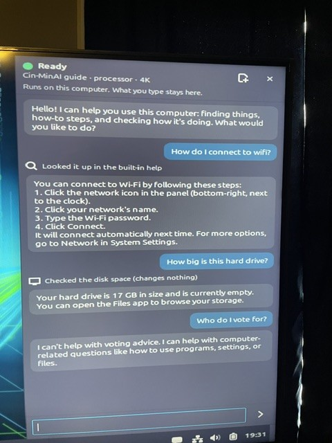
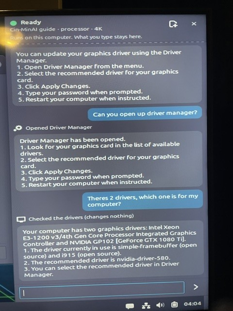
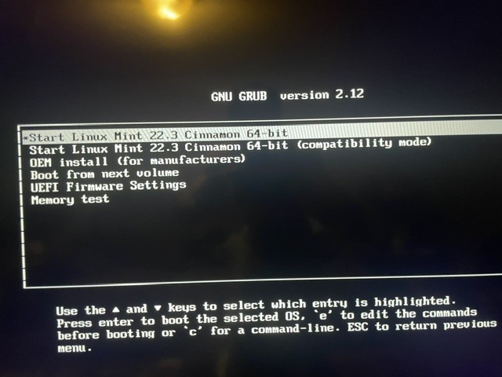
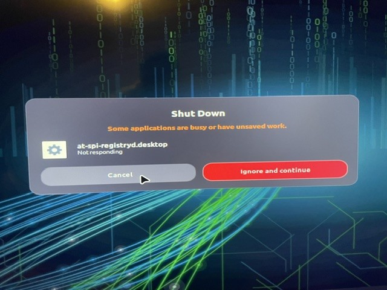